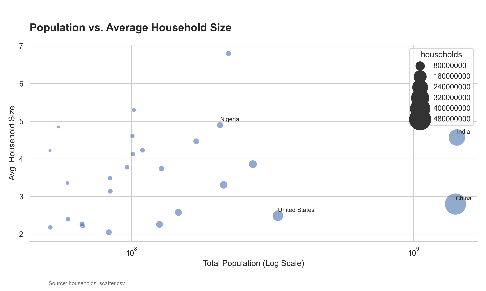

Population Density vs. Domestic Living Standards
Larger populations often correlate with higher average household sizes, reflecting both cultural norms and economic stages.

Key Insights
- Emerging Market Dynamics: India and Nigeria show significantly higher average household sizes compared to Western counterparts, driven by younger populations and multi-generational living.
- Developed Economy Contrast: The United States and China occupy lower average household size tiers, even with vast total populations, indicating a shift toward smaller nuclear family structures.
- Scaling Trends: As population grows, the variance in household size remains high, suggesting that economic development level is a stronger predictor of household size than total population alone.